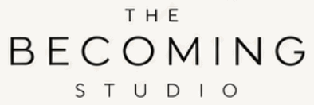

{{ tagline }}
The Gallery
{{ worksLabel }}
{{ col.label }}
{{ col.count }}
{{ item.num }}
{{ item.name }}
{{ item.medium }}
{{ active.num }}
{{ active.medium }}
{{ active.name }}
{{ active.desc }}
{{ active.kicker }}
{{ active.statusLine }}
Close